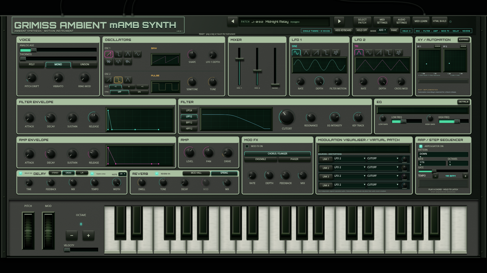
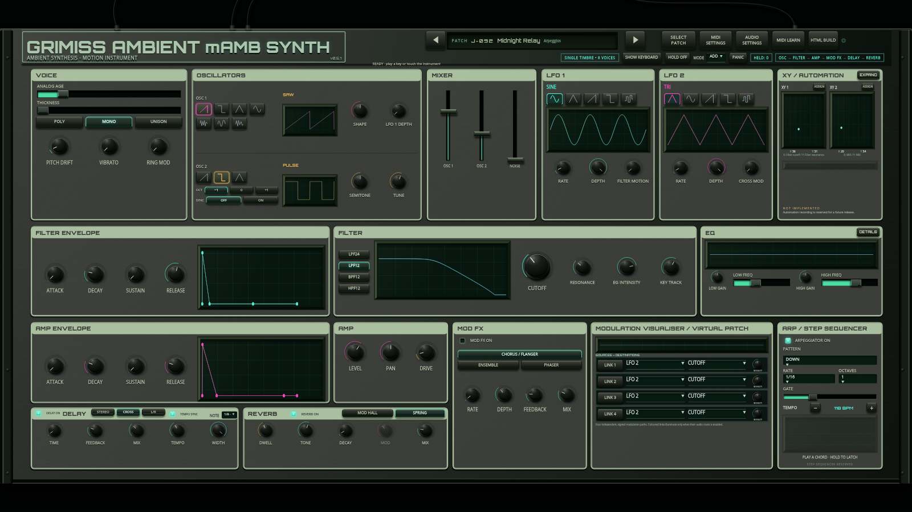
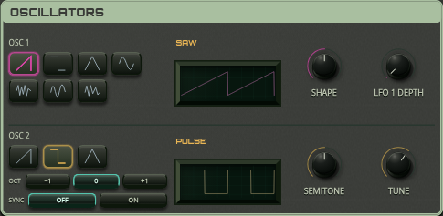

Open the playable synthesizer. Headings use the embedded Orbitron font at its actual900 (Black) weight. Section names sit in rounded sage boxes with dark cut-out lettering. The thicker rules use an inset stroke to preserve the existing control layout. Every section has the oscillator's colour and texture.



Existing geometry, control bindings, audio, MIDI, presets and arpeggiator are unchanged. Browser layout and audio/control checks passed; all embedded program scripts match the rollback byte-for-byte.